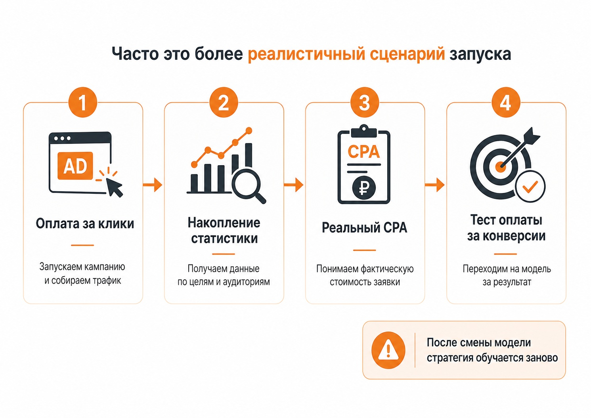
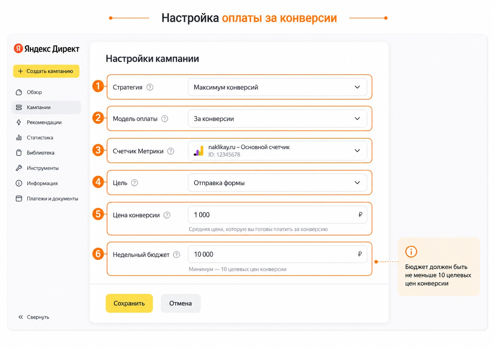

Блог о платном трафике
Оплата за конверсии в Яндекс Директ: как это работает на практике
Оплата за конверсии в Яндекс Директе позволяет списывать деньги не за каждый клик по объявлению, а за достижение выбранной цели: заявку, заказ, регистрацию или другое целевое действие.
Технически это действительно модель, в которой рекламодатель задает цену конверсии и платит за полученный результат.
Но воспринимать ее как способ купить любое количество заявок по самостоятельно назначенной цене нельзя. Нельзя поставить стоимость лида 300 ₽ в нише, где реальная заявка обходится в несколько тысяч, включить оплату за конверсии и заставить алгоритм продавать лиды по 300 ₽.
На практике стратегия либо сильно ограничит показы, либо будет давать очень небольшой объем, либо вообще не сможет нормально обучиться. Сам Яндекс прямо предупреждает, что недостижимая цена конверсии и недостаточный бюджет приводят к уменьшению количества целевых визитов.
Что значит оплата за конверсию
Модель работает внутри стратегии «Максимум конверсий». Вы выбираете цель из Яндекс Метрики и указываете сумму, которую готовы платить за ее достижение. В текущей версии Директа максимальная цена одной конверсии составляет 50 000 ₽.
Например, если целью является отправленная заявка и установлена цена 500 ₽, деньги списываются после достижения этой цели, а сами клики отдельно не оплачиваются.
При этом конверсия может произойти не сразу. Для кампаний с такой моделью Яндекс учитывает целевые действия, произошедшие в течение 21 дня после клика по рекламе.
Если в стратегии одновременно используются несколько целей, оплата может списываться отдельно за разные цели, достигнутые одним пользователем. Поэтому выбирать события для оптимизации нужно внимательно.
Подробнее о показателе - в статье «CPA в Яндекс Директе: что это и как считать».
Почему нельзя просто назначить желаемую цену заявки
Основное заблуждение связано с тем, что рекламодатель видит поле «Цена конверсии» и воспринимает его как заказ услуги у Яндекса.
Допустим, бизнес готов платить за заявку максимум 500 ₽. Кажется логичным установить эту сумму и ждать заявки по 500 ₽.
Но цена здесь одновременно влияет на возможности алгоритма участвовать в рекламных аукционах. Если системе практически невозможно находить пользователей, способных совершить нужное действие при такой экономике, она начинает сокращать объем рекламы.
Яндекс также указывает, что низкая целевая цена может приводить к небольшому количеству целевых визитов, а увеличение цены обычно дает алгоритму больше возможностей для получения конверсий. Зависимость при этом нелинейная.
| Настройка | Возможный результат |
|---|---|
| Слишком низкая цена конверсии | Мало показов и конверсий |
| Реалистичная цена | Алгоритму проще находить нужную аудиторию |
| Более высокая цена | Обычно появляется больше возможностей для объема |
| Недостаток статистики | Стратегии сложнее обучиться |
Именно поэтому оплата за конверсии - это модель закупки трафика, а не гарантия получения заявок по любой назначенной стоимости.

Где оплата за конверсии работает лучше
По моей практике наиболее интересные результаты получаются там, где конверсий много и они относительно дешевые.
Например, в инфобизнесе, продвижении подписок, регистраций и других массовых действий, где целевое действие может стоить условные 200-300 ₽. При большом количестве таких событий алгоритм получает достаточно данных и способен находить похожую аудиторию.
Совсем другая ситуация возникает в нише, где одна качественная заявка стоит несколько тысяч рублей и приходит несколько раз в неделю. Даже если технически задать нужную стоимость можно, алгоритму гораздо сложнее собрать достаточную статистику.
Яндекс рекомендует предоставлять конверсионным стратегиям как можно больше данных. В обучающих материалах компании ориентиром называется около 10 конверсий для обучения, хотя необходимый объем может отличаться в зависимости от ситуации.
Поэтому проблема оплаты за конверсии чаще заключается не в наличии самой настройки, а в объеме данных и реальной стоимости привлечения клиента.
Почему новые кампании часто сначала лучше запускать с оплатой за клики
Если рекламная кампания новая и данных практически нет, я обычно не рассчитываю на оплату за конверсии как на основной стартовый инструмент.
Сначала алгоритму нужно понять, какие пользователи кликают, кто из них оставляет заявки, какие объявления и аудитории работают лучше. Для этого кампанию можно запустить на «Максимуме конверсий», но с оплатой за клики, накопить статистику и определить реальную стоимость нужного действия.
Такой подход используют и в актуальных рекомендациях по работе с конверсионными стратегиями: результат стратегии имеет смысл оценивать после периода сбора статистики, а при недостатке конверсий сначала работать над объемом данных.
Иногда для обучения приходится потратить довольно заметный бюджет именно на кликовой модели. Только после этого имеет смысл тестировать переход на оплату за результат.
Причем смена модели с оплаты за клики на оплату за конверсии сама по себе перезапускает обучение стратегии. Частые изменения целей, атрибуции и других ключевых параметров также могут мешать алгоритму стабилизироваться.

Какой бюджет нужен
Даже при оплате только за целевые действия нельзя поставить произвольный маленький недельный бюджет.
По действующим требованиям Яндекс Директа недельный бюджет должен быть не меньше десятикратной установленной цены конверсии. Например, при цене цели 1 000 ₽ бюджет должен составлять минимум 10 000 ₽ в неделю. Для бюджета на период действует аналогичная логика, а если кампания работает больше недели, средств должно хватать минимум на 10 конверсий каждую неделю.
Это хорошо показывает сам принцип стратегии. Алгоритму нужен определенный запас бюджета и достаточное количество событий. Оплата за конверсии не превращает маленький рекламный бюджет в неограниченный источник заявок.
Как правильно выбрать цель
Оптимизироваться лучше по событию, которое действительно связано с бизнес-результатом.
Для сайта услуг это может быть отправленная форма. Для интернет-магазина - покупка. В других проектах целевым действием может быть регистрация или другое событие, которое имеет понятную ценность для бизнеса.
В интерфейсе Директа рядом с целями отображается индикатор количества накопленных данных. Зеленая отметка означает, что целевых визитов достаточно, серая показывает недостаток статистики и повышенный риск неэффективной работы стратегии.
Поэтому выбирать редкую цель только потому, что она находится ближе всего к реальной продаже, не всегда правильно. Если покупок три в месяц, а качественных заявок несколько десятков, алгоритму может быть полезнее сначала обучаться на заявках.
Перед запуском обязательно стоит проверить, что цель Яндекс Метрики действительно фиксируется корректно. Для этого подойдет инструкция «Как проверить цель в Яндекс Метрике».
Как включить оплату за конверсии
В настройках рекламной кампании нужно выбрать стратегию «Максимум конверсий», модель оплаты «За конверсии», добавить счетчик Яндекс Метрики, выбрать нужное целевое действие и назначить его цену. Затем задается недельный бюджет или бюджет на период.
После запуска не стоит постоянно менять цену, цели и основные настройки. Конверсионным стратегиям требуется время на накопление статистики. Сам Яндекс рекомендует оценивать результат примерно через 7-14 дней, а после существенных изменений стратегии обучение может начаться заново.

Почему кампания с оплатой за конверсии почти не работает
Типичная ситуация выглядит так: рекламодатель включает стратегию, назначает привлекательную стоимость заявки, но показов практически нет.
Чаще всего причина довольно простая - система не видит возможности получать достаточное количество выбранных конверсий по заданной цене.
В такой ситуации бессмысленно ждать, что алгоритм со временем обязательно начнет выдавать нужный объем. Нужно смотреть реальный CPA в кампаниях с оплатой за клики, количество накопленных целевых действий, качество выбранной цели и доступный бюджет.
Если обычная кампания получает заявку, например, за 2 000 ₽, попытка перейти на оплату за конверсии и сразу назначить 500 ₽ обычно не создаст новый источник заявок по четверти рыночной стоимости. Скорее уменьшится объем трафика.
Можно ли перевести весь Яндекс Директ на оплату за конверсии
Технически такую модель можно применять в подходящих кампаниях, но я не рекомендую строить на ней весь рекламный аккаунт.
В отдельных проектах она работает хорошо. В других несколько недель дает хороший результат, а затем теряет объем. Где-то кампания стабильно получает небольшое количество дешевых конверсий, но масштабировать их не получается.
Особенно хорошо видна проблема при попытке перевести сразу несколько кампаний. Каждой из них нужны данные, объем аукционов и пользователи, которых алгоритм способен покупать в рамках установленной цены. В результате суммарное количество конверсий часто оказывается значительно меньше, чем при нормальной работе кампаний с оплатой за клики.
Поэтому я рассматриваю оплату за конверсии как один из инструментов Яндекс Директа, а не как основную модель, на которую обязательно нужно переводить всю рекламу. Основы работы с сервисом разобраны в статье «Как работает Яндекс Директ: простое объяснение для новичков».
Итог
Оплата за конверсии в Яндекс Директе действительно позволяет платить за конкретные целевые действия вместо кликов. Но назначенная цена конверсии должна соответствовать реальной экономике рекламы, а алгоритму нужен достаточный объем данных для обучения.
Лучше всего такая схема чувствует себя там, где конверсии относительно дешевые и происходят часто. Для новой кампании обычно разумнее сначала накопить статистику на оплате за клики, понять реальный CPA и только потом тестировать переход.
Главное - не воспринимать эту настройку как возможность назначить любую удобную стоимость заявки. Если рынок и накопленные данные не позволяют получать конверсии по такой цене, Яндекс скорее сократит объем рекламы, чем начнет продавать заявки дешевле их реальной стоимости.